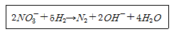
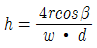
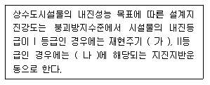
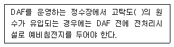
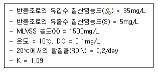
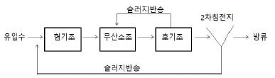
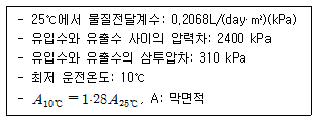
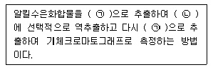
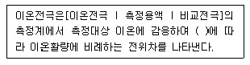
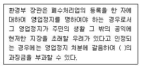

수질환경기사 (2015-03-08 기출문제)
1과목: 수질오염개론
1. 미생물 영양원 중 유황(sulfur)에 관한 설명으로 틀린 것은?(문제 오류로 처음 가답안 발표시 4번으로 발표되었으며 확정 답안 발표시 1, 4번 중복 정답으로 처리 되었습니다. 여기서는 4번을 누르면 정답 처리 됩니다.)
- 황산화세균은 편성 혐기성 세균이다.
- 유황을 함유한 아미노산은 세포 단백질의 필수 구성원이다.
- 미생물세포에서 탄소 대 유황의 비는 100:1 정도이다.
- 유황고정, 유황화합물, 산화·환원 순으로 변환된다.
(정답률: 80%)

2. 호수의 수질관리를 위하여 일반적으로 사용할 수 있는 예측모형으로 틀린 것은?
- WASP5 모델
- WQRRS 모델
- POM 모델
- Vollenweider 모델
(정답률: 83%)
3. 해수의 함유성분들 중 가장 적게 함유된 성분은?
- SO42-
- Ca2+
- Na+
- Mg2+
(정답률: 70%)
4. 다음 수질을 가진 농업용수의 SAR값으로부터 Na+가 흙에 미치는 영향은 어떻다고 할 수 있는가? (단, 수질농도는 Na+=1,150mg/L, Ca2+=60mg/L, Mg2+=36mg/L, PO43-=1,500mg/L, I-=200mg/L이며 원자량은 Na: 23, Mg: 24, P: 31, Ca:40)
- 영향이 작다.
- 영향이 중간 정도이다.
- 영향이 비교적 크다.
- 영향이 매우 크다.
(정답률: 67%)
5. Glucose(C6H12O6) 500mg/L 용액을 호기성 처리시 필요한 이론적인 인(P) 농도(mg/L)는? (단, BOD5 : N : P = 100 : 5 : 1, K1=0.1day-1, 상용대수기준, 완전분해 기준, BODu = COD)
- 약 3.7
- 약 5.6
- 약 8.5
- 약 12.8
(정답률: 68%)
6. 정화조로 유입된 생 분뇨의 BOD가 21500mg/L, 염소이온 농도가 5500mg/L, 방류수의 염소이온 농도가 200mg/L이라면, 방류수의 BOD 농도가 30mg/L 일 때 정화조의 BOD 제거율(%)은?(오류 신고가 접수된 문제입니다. 반드시 정답과 해설을 확인하시기 바랍니다.)
- 99.6
- 96.2
- 93.4
- 89.8
(정답률: 63%)
7. 반응조 혼합에 관한 내용을 기술한 것으로 틀린 것은?
- Morrill 지수가 1인 경우, 이상적인 플러그 흐름 상태이다.
- 분산 수가 무한대가 되면 이상적인 플러그 흐름 상태이다.
- 분산이 1 이면 이상적인 완전혼합 흐름 상태이다.
- Morrill 지수의 값이 클수록 완전혼합 흐름 상태에 근접한다.
(정답률: 70%)
8. 유해물질로 인하여 발생하는 대표적 질환으로 맞는 것은?
- PCB : 파킨슨씨 증후군과 유사한 증상
- 수은 : 중추신경계의 마비와 콩팥 기능의 장해
- 아연 : 월슨씨병
- 구리 : 카네미유증
(정답률: 69%)
9. 산화와 환원반응에 대한 설명으로 틀린 것은?
- 전자를 준 쪽은 산화된 것이고 전자를 얻는 쪽은 환원이 된 것이다.
- 산화수가 증가하면 산화, 감소하면 환원반응이라 한다.
- 산화제는 전자를 주는 물질이며 전자를 주는 힘이 클수록 더 강한 산화제이다.
- 상대방을 산화시키고 자신을 환원시키는 물질을 산화제라 한다.
(정답률: 60%)
10. 아래와 같은 반응에 관여하는 미생물은?

- Pseudomonas
- Sphaerotillus
- Acinetobacter
- Nitrosomonas
(정답률: 73%)
11. 용량이 6000m3인 수조에 200m3/hr의 유량이 유입된다면 수조내 염소이온 농도가 200mg/L에서 20mg/L 될 때까지의 소요시간(hr)은? (단, 유입수 내 염소이온 농도는 0, 완전혼합형, 희석효과만고려함)
- 약 34
- 약 48
- 약 57
- 약 69
(정답률: 53%)
12. 탈질에 관한 생물반응에 대한 설명으로 틀린 것은?
- 관련 미생물: 통성 혐기성균
- 증식속도: 2~8 mg NO3--N/MLSS·hr
- 알칼리도: NO3--N, NO2--N 환원에 따라 알칼리도 생성
- 용존산소: 0 mg/L에 가까움
(정답률: 55%)
13. 하천의 자정작용에 관한 설명 중 틀린 것은?
- 생물학적 자정작용인 혐기성분해는 중간 화합물이 휘발성이므로 유해한 경우가 많으며 호기성분해에 비하여 장시간이 요구된다.
- 자정작용 중 가장 큰 비중을 차지하는 것은 생물학적 작용이라 할수 있다.
- 자정계수는 탈산소계수/재폭기계수를 뜻한다.
- 화학적 자정작용인 응집작용은 흡수된 산소에 의해 오염물질이 분해될 때 발생되는 탄산가스가 물의 pH를 증가시켜 수산화물의 생성을 촉진시키므로 용해되어 있는 철이나 망간 등을 침전시킨다.
(정답률: 74%)
14. 직경 3mm인 모세관의 표면장력이 0.0037kgf/m이라면 물 기둥의 상승높이는? (단,

, 접촉각 β = 5°)- 0.26 cm
- 0.38 cm
- 0.49 cm
- 0.57 cm
(정답률: 67%)
15. 친수성 콜로이드에 관한 설명으로 틀린 것은?
- 유탁상태(에멀전)로 존재한다.
- 물에 쉽게 분산된다.
- 친수성 콜로이드의 대부분은 소수성 콜로이드를 보호하는 작용을 한다.
- 틴달(Tyndall)효과가 크다.
(정답률: 68%)
16. 수온 20℃, 유량 20m3/sec, BODu 5mg/L인 하천에 점오염원으로부터 유량 3m3/sec, 수온 20℃, 부하량 50 g BODu/sec의 오염 물질이 유입되어 완전혼합 될 때 0.5일 유하 후의 잔류 BOD는? (단, 하천의 20℃의 탈산소 계수는 0.2/day(자연대수)이고, BOD 분해에 필요한 만큼의 충분한 DO가 하천내에 존재함)
- 약 7mg/L
- 약 6mg/L
- 약 5mg/L
- 약 4mg/L
(정답률: 44%)
17. 분뇨의 일반적인 설명으로 틀린 것은?
- 하수 슬러지에 비해 염분농도와 질소농도가 높다.
- 다량의 유기물과 협잡물을 함유하나 고액분리가 용이하다.
- 분뇨에 함유된 질소화합물이 pH 완충작용을 한다.
- 일반적으로 수집·처분계획을 수립시, 1인 1일 1L를 기준으로 한다.
(정답률: 78%)
18. 크롬에 관한 설명으로 틀린 것은?
- 만성크롬중독인 경우에는 미나마타병이 발생한다.
- 3가 크롬은 비교적 안정하나 6가 크롬화합물은 자극성이 강하고 부식성이 강하다.
- 3가 크롬은 피부흡수가 어려우나 6가 크롬은 쉽게 피부를 통과한다.
- 만성중독현상으로는 비점막염증이 나타난다.
(정답률: 80%)
19. DO 포화농도가 8mg/L인 하천에서 t=0 일 때 DO가 5 mg/L이라면 6일 유하했을 때의 DO 부족량은? (단, BODu=20mg/L, K1=0.1/day, K2=0.2/day, 상용대수)
- 약 2mg/L
- 약 3mg/L
- 약 4mg/L
- 약 5mg/L
(정답률: 61%)
20. 콜로이드 응집의 기본 메카니즘이 아닌 것은?
- 전하의 중화
- 이중층의 압축
- 입자간의 가교 형성
- 중력에 따른 전단력 강화
(정답률: 59%)
2과목: 상하수도계획
21. 기존의 하수처리시설에 고도처리시설을 설치하고자 할 때 검토사항으로 틀린 것은?
- 표준활성슬러지법이 설치된 기존처리장의 고도처리개량은 개선대상 오염물질별 처리특성을 감안하여 효율적인 설계가 되어야 한다.
- 시설개량은 시설개량방식을 우선 검토하되 방류수 수질기준 준수가 곤란한 경우에 한해 운전개선방식을 함께 추진하여야 한다.
- 기본설계과정에서 처리장의 운영실태 정밀분석을 실시한 후 이를 근거로 사업추진방향 및 범위 등을 결정하여야 한다.
- 기존시설물 및 처리공정을 최대한 활용하여야 한다.
(정답률: 68%)
22. 하수도시설기준의 우수배제계획에서 계획우수량을 정할 때 빗물 펌프장 확률년수 기준으로 옳은 것은?
- 15 ~ 20년
- 20 ~ 30년
- 30 ~ 50년
- 50 ~ 100년
(정답률: 67%)
23. 하수처리시설인 순산소활성슬러지법에 관한 설명으로 틀린 것은?
- 잉여슬러지 발생량은 슬러지의 체류시간에 의해서 큰 차이가 나므로 표준활성슬러지법에 비해서 일반적으로 적다.
- MLSS 농도는 표준활성슬러지법의 2배 이상으로 유지 가능하다.
- 포기조 내의 SVI는 보통 100 이하로 유지되고 슬러지 침강성은 양호하다.
- 이차침전지에서 스컴이 거의 발생하지 않는다.
(정답률: 59%)
24. 우물의 양수량 결정시 적용되는 “적정양수량”의 정의로 옳은 것은?
- 최대양수량의 70% 이하
- 최대양수량의 80% 이하
- 한계양수량의 70% 이하
- 한계양수량의 80% 이하
(정답률: 75%)
25. 분류식하수배제방식에서, 펌프장시설의 계획하수량 결정시 유입·방류펌프장 계획하수량으로 옳은 것은?
- 계획시간최대오수량
- 계획우수량
- 우천시계획오수량
- 계획일최대오수량
(정답률: 56%)
26. 막여과 정수처리설비에 대한 내용으로 옳은 것은?
- 막 여과유속은 경제성 및 보수성을 종합적으로 고려하여 최저치를 설정한다.
- 회수율은 취수조건 등과 상관없이 일정하게 운영하는 것이 효율적이고 경제적이다.
- 구동압방식과 운전제어방식은 구동압이나 막의 종류, 배수(配水)조건 등을 고려하여 최적방식을 선정한다.
- 막 여과방식은 막 공급수질을 제외한 막 여과수량과 막의 종별 등의 조건을 고려하여 최적방식을 선정한다.
(정답률: 65%)
27. 정수시설의 착수정 구조와 형상에 관한 설계기준으로 틀린 것은?
- 착수정은 분할을 원칙으로 하며 고수위 이상으로 유지되도록 월류관이나 월류위어를 설치한다.
- 형상은 일반적으로 직사각형 또는 원형으로 하고 유입구에는 제수밸브 등을 설치한다.
- 착수정의 고수위와 주변벽체의 상단 간에는 60cm이상의 여유를 두어야 한다.
- 부유물이나 조류 등을 제거할 필요가 있는 장소에는 스크린을 설치한다.
(정답률: 70%)
28. 하수시설에서 우수조정지 구조형식이 아닌 것은?
- 댐식(제방높이 15m 미만)
- 저하식(관내 저류포함)
- 굴착식
- 유하식(자연 호소포함)
(정답률: 51%)
29. 펌프의 토출량이 1.0m3/sec, 토출구의 유속이 3.55 m/sec 일 때 펌프의 구경(mm)은?
- 500
- 600
- 700
- 800
(정답률: 65%)
30. 상수도시설의 등급별 내진설계 목표에 대한 내용이다. ( )안에 옳은 내용은?

- 가: 100년, 나: 50년
- 가: 200년, 나: 100년
- 가: 500년, 나: 200년
- 가: 1000년, 나: 500년
(정답률: 70%)
31. 구경 400mm인 직렬펌프의 토출량이 10m3/min, 규정 전양정이 40m, 규정 회전속도가 4200 rpm일 때 비회전속도(Ns)는?
- 609
- 756
- 835
- 957
(정답률: 65%)
32. 계획오수량을 정할 때 고려되는 지하수량에 대한 설명으로 옳은 것은?
- 1인1일평균오수량의 5~10%로 한다.
- 1인1일최대오수량의 5~10%로 한다.
- 1인1일평균오수량의 10~20%로 한다.
- 1인1일최대오수량의 10~20%로 한다.
(정답률: 63%)
33. 하수처리공법 중 접촉산화법에 대한 설명으로 틀린 것은?
- 반송슬러지가 필요하지 않으므로 운전관리가 용이하다.
- 생물상이 다양하여 처리효과가 안정적이다.
- 부착생물량의 임의 조정이 어려워 조작조건 변경에 대응하기 쉽지 않다.
- 접촉재가 조 내에 있기 때문에 부착생물량의 확인이 어렵다
(정답률: 58%)
34. 용존공기부상(DAF)에 관한 내용이다. ( )안에 옳은 것은?

- 100 NTU 이상
- 1000 NTU 이상
- 2000 NTU 이상
- 5000 NTU 이상
(정답률: 54%)
35. 상수도시설인 집수매거의 구조에 대한 설명으로 틀린 것은?
- 집수매거의 경사는 수평으로 하거나 1/500 이하의 완만한 경사로 한다.
- 집수매거는 지형 등을 고려하여 가능한 한 복류수 흐름방향과 수평으로 설치하는 것이 효율적이다.
- 집수매거의 매설깊이는 5m 이상으로 하는 것이 바람직하다.
- 집수매거의 길이는 시험우물 등에 의한 양수시험 결과에 따라 정한다.
(정답률: 64%)
36. 상수도시설 중 저수시설인 하구둑에 관한 설명으로 틀린 것은? (단, 전용댐, 다목적댐과 비교)
- 개발수량: 중소규모의 개발이 기대된다.
- 경제성: 일반적으로 댐보다 저렴하다.
- 설치지점: 수요지 가까운 하천의 하구에 설치하여 농업용수에 바닷물의 침해방지기능을 겸하는
- 저류수의 수질: 자체관리로 비교적 양호한 수질을 유지할 수 있어 염소이온 농도에 대한 주의가 필요 없다.
(정답률: 71%)
37. 하수처리시설의 계획유입수질 산정방식으로 옳은 것은?
- 계획오염부하량을 계획1일평균오수량으로 나누어 산정한다.
- 계획오염부하량을 계획시간평균오수량으로 나누어 산정한다.
- 계획오염부하량을 계획1일최대오수량으로 나누어 산정한다.
- 계획오염부하량을 계획시간최대오수량으로 나누어 산정한다.
(정답률: 50%)
38. 도수관 설계시 접합정에 대한 설명으로 틀린 것은?
- 구조상 안전한 것으로 충분한 수밀성과 내구성을 지니며 용량은 계획도수량의 3분 이상으로 한다.
- 유입속도가 큰 경우에는 접합정 내에 월류벽 등을 설치하여 유속을 감쇄시킨 다음 유출관으로 유출되는 구조로 한다.
- 유출관의 유출구 중심높이는 저수위에서 관경의 2배 이상 낮게하는 것을 원칙으로 한다.
- 필요에 따라 양수장치, 배수설비, 월류장치를 설치하고 유출구와 배수설비에는 제수밸브 또는 제수문을 설치한다.
(정답률: 45%)
39. 길이 1.2km 의 하수관이 2‰의 경사로 매설되어 있을 경우, 이 하수관 양 끝단간의 고저차는? (단, 기타 사항은 고려하지 않음)
- 0.24m
- 2.4m
- 0.6m
- 6.0m
(정답률: 69%)
40. 상수도 시설용량의 계획에 대한 설명 중 틀린 것은?
- 취수시설의 계획취수량은 계획1일 최대급수량을 기준으로 한다.
- 도수시설의 계획도수량은 계획취수량을 기준으로 한다.
- 정수시설의 계획정수량은 계획1일 최대급수량을 기준으로 한다.
- 배수시설의 계획배수량은 계획1일 최대급수량을 기준으로 한다.
(정답률: 52%)
3과목: 수질오염방지기술
41. 아래의 조건에서 탈질반응조(anoxic basin) 체류시간은?(오류 신고가 접수된 문제입니다. 반드시 정답과 해설을 확인하시기 바랍니다.)

- 3.3 hr
- 4.3 hr
- 5.3 hr
- 6.3 hr
(정답률: 25%)
42. 하수에서의 생물학적 질소 제거에 대한 설명으로 틀린 것은?(오류 신고가 접수된 문제입니다. 반드시 정답과 해설을 확인하시기 바랍니다.)
- 탈질을 위해서는 유기탄소가 필요하다.
- 부유성장 탈질 반응기에서의 전형적인 수리학적 체류시간은 5~6시간이다.
- 질산화 미생물의 성장속도는 온도와 기타의 환경적 변수에 강하게 의존한다.
- 탈질화는 알칼리도의 순생성을 나타내며 탈질을 위한 최적 pH는 6~8이다.
(정답률: 43%)
43. 아래의 공정은 A2/O 공정을 나타낸 것이다. 각 반응조의 주요 기능에 대하여 옳은 것은?

- 혐기조: 인방출, 무산소조: 질산화, 호기조: 탈질, 인과잉섭취
- 혐기조: 인방출, 무산소조: 탈질, 호기조: 인과잉섭취, 질산화
- 혐기조: 탈질, 무산소조: 질산화, 호기조: 인방출 및 과잉섭취
- 혐기조: 탈질, 무산소조: 인과잉섭취, 호기조: 질산화, 인방출
(정답률: 62%)
44. 폭기조의 MLSS 농도를 3000mg/L로 유지하기 위한 재순환율은? (단, SVI = 120, 유입 SS 고려하지 않고, 방류수 SS는 0 mg/L임)
- 36.3%
- 46.3%
- 56.3%
- 66.3%
(정답률: 54%)
45. 수량 36000m3/day의 하수를 폭 15m, 길이 30m, 깊이 2.5m의침전지에서 표면적 부하 40m3/m2·day의 조건으로 처리하기 위한침전지 수는? (단, 병렬 기준)
- 2
- 3
- 4
- 5
(정답률: 59%)
46. G=200/sec, V=150m3, 교반기 효율 80%, μ=1.35×10-2g/cm·sec 일 때 소요동력 P(kW)는?
- 20.8 kW
- 15.8 kW
- 10.1 kW
- 5.1 kW
(정답률: 55%)
47. 염소 소독의 장·단점으로 틀린 것은? (단, 자외선 소독과 비교 기준)
- 소독력 있는 잔류염소를 수송관거 내에 유지시킬 수 있다.
- 처리수의 총용존고형물이 감소한다.
- 염소접촉조로부터 휘발성 유기물이 생성된다.
- 처리수의 잔류독성이 탈염소과정에 의해 제거되어야 한다.
(정답률: 62%)
48. 9.0 kg의 글루코스(C6H12O6)로부터 발생 가능한 0℃, 1atm 에서의 CH4 가스의 용적은? (단, 혐기성 분해 기준)
- 3160 L
- 3360 L
- 3560 L
- 3760 L
(정답률: 61%)
49. NO3--N 15 mg/L가 탈질균에 의해 질소가스화 될 때 소요되는 이론적 메탄올의 양(mg/L)은? (단, 기타 유기 탄소원은 고려하지 않음)
- 5.5
- 6.5
- 7.5
- 8.5
(정답률: 35%)
50. 폐수 내 함유된 NH4+ 36mg/L를 제거하기 위하여 이온교환능력이 100g CaCO3/m3 인 양이온 교환수지를 이용하여 1000m3의 폐수를 처리하고자 할 때 필요한 양이온 교환수지의 부피는?
- 1000 m3
- 2000 m3
- 3000 m3
- 4000 m3
(정답률: 33%)
51. 살수여상 처리공정에서 생성되는 슬러지의 농도는 4.5%이며 하루에 생성되는 고형물의 양은 1000kg 이다. 이 슬러지를 중력을 이용하여 농축시키고자 할 때 중력농축조의 직경은? (단, 농축조의 형태는 원형이며 깊이는 3m, 중력농축조의 고형물 부하량은 25kg/m2·day, 비중은 1.0)
- 3.55m
- 5.10m
- 6.72m
- 7.14m
(정답률: 35%)
52. 도시 하수처리장 1차 침전지의 SS 제거효율이 약 38%이다. 유입수의 SS가 260mg/L 이고, 유량이 8000m3/day라면 1차 침전지에서 제거되는 슬러지의 양은? (단, 1차 슬러지는 5%의 고형물을 함유하며, 슬러지의 비중은 1.1 이다.)
- 약 6.4 m3/day
- 약 9.4 m3/day
- 약 12.4 m3/day
- 약 14.4 m3/day
(정답률: 43%)
53. 펜톤산화처리방법에 관한 설명으로 틀린 것은?
- 일반적인 적정 반응 pH는 3~4.5 이다.
- 펜톤시약은 철염과 과산화수소를 말한다.
- 과산화수소수를 과량으로 첨가하면 수산화철의 침전율을 향상시킬수 있다.
- 폐수의 COD는 감소하지만 BOD는 증가할 수 있다.
(정답률: 43%)
54. 활성슬러지를 탈수하기 위하여 98%(중량비)의 수분을 함유하는 슬러지에 응집제를 가했더니 [상등액 : 침전슬러지]의 용적비가 2:1이 되었다. 이 때 침전 슬러지의 함수율은? (단, 응집제의 양은 매우 적고, 비중은 1.0으로 가정)
- 92%
- 93%
- 94%
- 95%
(정답률: 51%)
55. 활성슬러지 공정에서 폭기조 유입 BOD가 180mg/L, SS가 180mg/L, BOD-슬러지부하가 0.6kgBOD/kgMLSS·day 일 때, MLSS 농도는? (단, 폭기조 수리학적 체류시간은 6시간이다. )
- 1100 mg/L
- 1200 mg/L
- 1300 mg/L
- 1400 mg/L
(정답률: 54%)
56. 역삼투 장치로 하루에 500m3 의 3차 처리된 유출수를 탈염시키고자 한다. 요구되는 막면적(mm2은?

- 약 1130
- 약 1280
- 약 1330
- 약 1480
(정답률: 56%)
57. 하수고도처리 공법 중 생물학적 방법으로 질소와 인을 동시에 제거하기 위한 것은?
- Phostrip
- 4단계 Bardenpho
- A/O
- A2/O
(정답률: 66%)
58. 활성슬러지 공정의 폭기조 내 MLSS 농도 2000mg/L, 폭기조의 용량 5m3, 유입 폐수의 BOD 농도 300mg/L, 폐수 유량 15m3/day일 때, F/M 비(kg BOD/kg MLSS·day)는?
- 0.35
- 0.45
- 0.55
- 0.65
(정답률: 57%)
59. 총 잔류염소 농도(Cl2)를 3.⑤mg/L에서 1.00mg/L로 탈염시키기위해 유량 4350 m3/d인 물에 가해주어야 할 아황산염(SO32-)의 양은? (단, Cl: 35.5, S: 32.1)
- 약 6 kg/d
- 약 8 kg/d
- 약 10 kg/d
- 약 12 kg/d
(정답률: 45%)
60. MLSS의 농도가 1500 mg/L인 슬러지를 부상법(Flotation)에 의해 농축시키고자 한다. 압축 탱크의 유효전달 압력이 4기압이며 공기의 밀도를 1.3 g/L, 공기의 용해량이 18.7 mL/L일 때Air/Solid(A/S)비는? (단, 유량은 300m3/day 이며 처리수의 반송은없고 f = 0.5 이다. )
- 0.008
- 0.010
- 0.016
- 0.020
(정답률: 56%)
4과목: 수질오염공정시험기준
61. 수질분석용 시료 채취시 유의 사항과 가장 거리가 먼 것은?
- 채취용기는 시료를 채우기 전에 깨끗한 물로 3회 이상 씻은 다음 사용한다.
- 유류 또는 부유물질 등이 함유된 시료는 시료의 균일성이 유지될수 있도록 채취하여야 하며 침전물 등이 부상하여 혼입되어서는 안된다.
- 용존가스, 환원성 물질, 휘발성유기화합물, 냄새, 유류 및 수소이온 등을 측정하는 시료는 시료용기에 가득 채워야 한다.
- 시료 채취량은 보통 3~5L 정도이어야 한다.
(정답률: 67%)
62. 수은의 분석시 냉증기-원자흡수분광광도법에 사용하는 환원기화장치의 환원용기에 주입하는 용액은?
- 이염화주석
- 염화제일철용액
- 황산제일철용액
- 염산 히드록실아민용액
(정답률: 33%)
63. 다음은 기체크로마토그래피에 의한 알킬수은의 분석방법이다. ( )안에 알맞은 것은?

- ㉠ 헥산, ㉡ 염화메틸수은용액
- ㉠ 헥산, ㉡ 크로모졸브용액
- ㉠ 벤젠, ㉡ 펜토에이트용액
- ㉠ 벤젠, ㉡ L-시스테인용액
(정답률: 62%)
64. 용존산소(DO)측정시 시료가 착색, 현탁된 경우에 사용하는 전처리시약은?
- 칼륨명반용액, 암모니아수
- 황산구리, 술퍼민산용액
- 황산, 불화칼륨용액
- 황산제이철용액, 과산화수소
(정답률: 50%)
65. 다음은 이온전극법에 관한 설명이다. ( )안에 옳은 내용은?

- 네른스트 식
- 페러데이 식
- 플레밍 식
- 아레니우스 식
(정답률: 53%)
66. 자외선/가시선 분광법으로 폐수 중 크롬을 분석할 때 사용하지 않는 시약은?
- 과망간산칼륨
- 암모니아수
- 황산제이철암모늄
- 아자이드화나트륨
(정답률: 32%)
67. 원자흡수분광광도법의 간섭에 관한 사항 중 틀린 것은?
- 분석에 사용하는 스펙트럼선이 다른 인접선과 완전히 분리되지 않은 경우에는 표준시료와 분석시료의 조성을 더욱 비슷하게 하면 간섭의 영향을 피할 수 있다.
- 화학적 간섭은 불꽃의 온도가 분자를 들뜬 상태로 만들기에 충분히 높지 않아서, 해당 파장을 흡수하지 못하여 발생한다.
- 물리적 간섭은 표준물질과 시료의 매질 사이에 의해 발생한다.
- 이온화 간섭은 불꽃온도가 너무 높을 경우 중성원자에서 전자를 빼앗아 이온이 생성될 수 있으며 이 경우 음(-)의 오차가 발생하게 된다.
(정답률: 37%)
68. 알킬수은화합물을 기체크로마토그래피에 따라 정량할 때 사용하는 검출기로 가장 적절한 것은?
- 불꽃광도형 검출기(FPD)
- 전자포획형 검출기(ECD)
- 불꽃열이온화 검출기(FTD)
- 열전도도 검출기(TCD)
(정답률: 42%)
69. 식물성플랑크톤을 현미경계수법으로 측정할 때 분석기기 및 기구에 관한 내용으로 틀린 것은?
- 광학현미경 혹은 위상차 현미경: 1000배율까지 확대 가능한 현미경을 사용한다.
- 대물마이크로미터: 눈금이 새겨져 있는 평평한 판으로, 현미경으로 물체의 길이를 측정하고자 할 때 쓰는 도구로 접안마이크로미터한 눈금의 길이를 계산하는데 사용한다.
- 혈구계수기: 슬라이드글라스의 중앙에 격자모양의 계수구역이 상하 2개로 구분되어 있으며, 계수 구역에는 격자모양으로 구분이 되어 있어 각 격자 구역 내의 침전된 조류를 계수한 후 mL 당 총 세포수를 환산한다.
- 접안마이크로미터: 평평한 유리에 새겨진 눈금으로 접안렌즈에 부착하여 대물마이크로미터 길이 환산에 적용한다.
(정답률: 49%)
70. 다음 pH 표준액 중 pH 값이 0℃에서 가장 높은(큰) 값을 나타내는 표준액은?
- 프탈산염 표준액
- 수산염 표준액
- 탄산염 표준액
- 붕산염 표준액
(정답률: 50%)
71. 수질측정항목과 시료 최대보존기간이 잘못 연결된 것은?
- 생물 화학적 산소요구량 - 48시간
- 용존 총인 - 48시간
- 6가 크롬 - 24시간
- 분원성 대장균군 - 24시간
(정답률: 35%)
72. 다음 측정항목 중 시료의 보존방법이 다른 것은?
- 유기인
- 화학적 산소요구량
- 암모니아성 질소
- 노말헥산추출물질
(정답률: 54%)
73. 시료의 전처리를 위해 회화로를 사용하여 시료중의 유기물을 분해시키고자 한다. 회화로의 온도로 가장 적정한 것은?
- 350℃
- 450℃
- 550℃
- 650℃
(정답률: 40%)
74. 총 노말헥산추출물질 시험방법에서 시료에 넣어주는 지시약과 염산(1+1)을 넣어 조절해야 하는 pH 범위로 가장 적합한 것은?
- 메틸렌블루용액(0.1W/V%), pH 5.5 이하
- 메틸레드용액(0.1W/V%), pH 5.5 이하
- 메틸오렌지용액(0.1W/V%), pH 4 이하
- 메틸레드용액(0.1W/V%), pH 4 이하
(정답률: 51%)
75. 전기전도도 측정계에 관한 내용으로 옳지 않는 것은?
- 전기전도도 셀은 항상 수중에 잠긴 상태에서 보존하여야 하며 정기적으로 점검한 후 사용한다.
- 전도도 셀은 그 형태, 위치, 전극의 크기에 따라 각각 자체의 셀상수를 가지고 있다.
- 검출부는 한 쌍의 고정된 전극(보통 백금 전극 표면에 백금흑도금을 한 것)으로 된 전도도셀 등을 사용한다.
- 지시부는 직류 휘트스톤브리지 회로나 자체 보상회로로 구성된 것을 사용한다.
(정답률: 48%)
76. 유도결합플라스마 원자발광분광법에서 적용하는 정량방법과 가장 거리가 먼 것은?
- 넓이백분율법
- 표준첨가법
- 내표준법
- 검량선법
(정답률: 40%)
77. 0.1mgN/mL 농도의 NH3-N 표준원액을 1L 조제하고자 할 때요구되는 NH4Cl의 양은? (단, NH4Cl의 M.W = 53.5)
- 227 mg/L
- 382 mg/L
- 476 mg/L
- 591 mg/L
(정답률: 41%)
78. 다이에틸다이티오카르바민산법을 적용한 구리 측정에 관한 설명으로 틀린 것은?
- 시료의 전처리를 하지 않고 직접 시료를 사용하는 경우, 시료 중에 시안화합물이 함유되어 있으면 염산 산성으로 하여서 끓여 시안 화물을 완전히 분해 제거한 다음 시험한다.
- 비스머스(Bi)가 구리의 양보다 2배 이상 존재할 경우에는 청색을 나타내어 방해한다.
- 무수황산나트륨 대신 건조거름종이를 사용하여 여과하여도 된다.
- 추출용매는 초산부틸 대신 사염화탄소, 클로로포름, 벤젠 등을 사용할 수 있다.
(정답률: 45%)
79. 수질오염물질의 농도표시 방법에 대한 설명으로 적절치 않는 것은?
- 백만분율을 표시할 때는 ppm 또는 mg/L의 기호를 쓴다.
- 십억분율을 표시할 때는 g/m3 또는 ppb의 기호를 쓴다.
- 용액의 농도를 % 로만 표시할 때는 W/V%를 말한다.
- 십억분율은 1 ppm의 1/1000 이다.
(정답률: 50%)
80. 페놀류 측정시 적색의 안티피린계 색소의 흡광도를 측정하는 방법 중 클로로폼 용액에서는 몇 nm에서 측정하는가?
- 460 nm
- 480 nm
- 510 nm
- 540 nm
(정답률: 43%)
5과목: 수질환경관계법규
81. 배출시설의 설치를 제한할 수 있는 지역의 범위 기준으로 틀린 것은?
- 취수시설이 있는 지역
- 환경정책기본법 제38조에 따라 수질보전을 위해 지정·고시한 특별대책지역
- 수도법 제7조의제1항에 따라 공장의 설립이 제한되는 지역
- 수질보전을 위해 지정·고시한 특별대책지역의 하류지역
(정답률: 42%)
82. 다음의 수질오염방지시설중 물리적 처리시설에 해당되지 않는 것은?
- 유수분리시설
- 혼합시설
- 침전물 개량시설
- 응집시설
(정답률: 45%)
83. 규정에 의한 등록 또는 변경등록을 하지 아니하고 폐수처리업을한 자에 대한 벌칙기준은?
- 5년 이하의 징역 또는 3천만원 이하의 벌금
- 3년 이하의 징역 또는 2천만원 이하의 벌금
- 2년 이하의 징역 또는 1천5백만원 이하의 벌금
- 1년 이하의 징역 또는 1천만원 이하의 벌금
(정답률: 41%)
84. 사업장의 규모별 구분에 관한 내용으로 옳지 않는 것은?
- 1일 폐수배출량이 800m3인 사업장은 제2종 사업장이다.
- 1일 폐수배출량이 1800m3인 사업장은 제2종 사업장이다.
- 사업장 규모별 구분은 최근 조업한 30일간의 평균배출량을 기준으로 한다.
- 최초 배출시설 설치허가시의 폐수배출량은 사업계획에 따른 예상 용수사용량을 기준으로 산정한다.
(정답률: 45%)
85. 수질 및 수생태계 환경기준(하천) 중 사람의 건강보호를 위한 기준값으로 옳은 것은?
- 카드뮴 : 0.02 mg/L 이하
- 사염화탄소 : 0.04 mg/L 이하
- 6가 크롬 : 0.01 mg/L 이하
- 납(Pb) : 0.⑤ mg/L 이하
(정답률: 52%)
86. 기본부과금의 지역별 부과계수로 적합하지 않은 것은?
- 청정지역 : 1.5
- 가 지역 : 1
- 나 지역 : 1
- 특례지역 : 1
(정답률: 50%)
87. 폐수처리업자의 준수사항으로 틀린 것은?(오류 신고가 접수된 문제입니다. 반드시 정답과 해설을 확인하시기 바랍니다.)
- 증발농축시설, 건조시설, 소각시설의 대기오염물질 농도를 매월 1회 자가측정하여야 하며, 분기마다 악취에 대한 자가측정을 실시하여야 한다.
- 처리 후 발생하는 슬러지의 수분함량은 85% 이하이어야 하며, 처리는 폐기물관리법에 따라 적정하게 처리하여야 한다.
- 수탁한 폐수는 정당한 사유 없이 5일 이상 보관할 수 없으며 보관폐수의 전체량이 저장시설 저장능력의 80%이상 되게 보관하여서는 아니 된다.
- 기술인력을 그 해당 분야에 종사하도록 하여야 하며, 폐수처리시설을 16시간 이상 가동할 경우에는 해당 처리시설의 현장 근무 2년이상의 경력자를 작업현장에 책임 근무 하도록 하여야 한다.
(정답률: 55%)
88. 사업장별 환경기술인의 자격기준에 관한 설명으로 틀린 것은?
- 대기환경기술인으로 임명된 자가 수질환경기술인의 자격을 함께 춘 경우에는 수질환경기술인을 겸임할 수 있다.
- 연간 90일 미만 조업하는 제1종부터 제3종까지의 사업장은 제4종 사업장, 제5종 사업장에 해당하는 환경기술인을 선임할 수 있다.
- 공동방지시설의 경우에는 폐수배출량이 제4종 또는 제5종 사업장의 규모에 해당하면 제3종 사업장에 해당하는 환경기술인을 두어야한다.
- 제1종 또는 제2종 사업장 중 3개월간 실제 작업한 날만을 계산하여 1일 평균 17시간 이상 작업한 경우에는 환경기술인을 각각 2명이상 두어야 한다.
(정답률: 32%)
89. 시도지사가 오염총량관리기본계획의 승인을 받으려는 경우, 오염총량관리기본계획안에 첨부하여 환경부장관에게 제출하여야 하는서류와 가장 거리가 먼 것은?
- 유역환경의 조사, 분석 자료
- 오염원의 자연 증감에 관한 분석 자료
- 오염총량관리 계획 목표에 관한 자료
- 오염부하량의 저감계획을 수립하는 데에 사용한 자료
(정답률: 33%)
90. 수질 및 수생태계 보전에 관한 법률상 용어의 정의로 옳지 않은 것은?
- 폐수라 함은 물에 액체성 또는 고체성의 수질오염물질이 섞여 있어 그대로는 사용할 수 없는 물을 말한다.
- 수질오염물질이라 함은 수질오염의 요인이 되는 물질로서 환경부령이 정하는 것을 말한다.
- 폐수무방류배출시설이라 함은 폐수배출시설에서 발생하는 폐수를 위탁하여 공공수역으로 배출하지 아니하는 시설을 말한다.
- 기타 수질 오염원이라 함은 점오염원 및 비점오염원으로 관리되지 아니하는 수질오염물질을 배출하는 시설 또는 장소로서 환경부령이 정하는 것을 말한다.
(정답률: 42%)
91. 시·도지사가 오염총량관리기본계획 수립시 포함하여야 하는 사항과 가장 거리가 먼 것은?
- 해당 지역 개발계획의 내용
- 관할 지역의 오염원 현황
- 지방자치단체별·수계구간별 오염부하량의 할당
- 관할 지역 개발계획으로 인하여 추가로 배출되는 오염부하량 및 그 저감계획
(정답률: 26%)
92. 비점오염저감시설 중 장치형 시설이 아닌 것은?
- 생물학적 처리형 시설
- 응집 · 침전 처리형 시설
- 와류형 시설
- 침투형 시설
(정답률: 50%)
93. 배출시설 변경신고에 따른 가동시작 신고의 대상과 가장 거리가 먼 것은?
- 폐수배출량이 신고당시보다 100분의 50 이상 증가되는 경우
- 배출시설에 설치된 방지시설의 폐수처리방법을 변경하는 경우
- 배출시설에서 배출허용기준 보다 적게 발생한 오염물질로 인해 개선이 필요한 경우
- 방지시설 설치면제기준에 따라 방지시설을 설치하지 아니한 배출시설에 방지시설을 새로 설치하는 경우
(정답률: 52%)
94. 다음 중 특정수질유해물질이 아닌 것은?
- 1,1-디클로로에틸렌
- 브로모포름
- 아크릴로니트릴
- 2,4-다이옥신
(정답률: 47%)
95. 측정기기의 부착 대상 및 종류 중 부대시설에 해당되는 것으로 옳게 짝지은 것은?
- 자동시료채취기, 자료수집기
- 자동측정분석기기, 자동시료채취기
- 용수적산유량계, 적산전력계
- 하수, 폐수적산유량계, 적산전력계
(정답률: 47%)
96. 하천 수질 및 수생태계 상태의 생물등급이 [매우 좋음~ 좋음]인 경우, 생물 지표종(어류)으로 옳은 것은?
- 쉬리
- 쏘가리
- 은어
- 금강모치
(정답률: 49%)
97. 일일기준초과 배출량 산정시 적용되는 일일유량의 산정방법은? [측정유량×일일조업시간]이다. 측정유량의 단위는?
- 초당 리터
- 분당 리터
- 시간당 리터
- 일당 리터
(정답률: 55%)
98. 다음은 과징금에 관한 내용이다. ( )안에 옳은 내용은?(관련 규정 개정전 문제로 여기서는 기존 정답인 2번을 누르면 정답 처리됩니다. 자세한 내용은 해설을 참고하세요.)

- 1억원 이하
- 2억원 이하
- 3억원 이하
- 5억원 이하
(정답률: 39%)
99. 사업자 및 배출시설과 방지시설에 종사하는 자는 배출시설과 방지시설의 정상적인 운영, 관리를 위한 환경기술인의 업무를 방해하여서는 아니 되며, 그로부터 업무수행에 필요한 요청을 받은 때에는 정당한 사유가 없으면 이에 따라야 한다. 이 규정을 위반하여 환경 기술인의 업무를 방해하거나 환경기술인의 요청을 정당한 사유 없이 거부한 자에 대한 벌칙 기준은?
- 100만원 이하의 벌금
- 200만원 이하의 벌금
- 300만원 이하의 벌금
- 500만원 이하의 벌금
(정답률: 57%)
100. 배출시설에 대한 일일기준초과배출량 산정시 적용되는 일일유량 산정식 중 일일조업시간에 대한 내용으로 맞는 것은?
- 일일조업시간은 측정하기 전 최근 조업한 3월간의 배출시설의 조업시간의 평균치로서 분으로 표시한다.
- 일일조업시간은 측정하기 전 최근 조업한 3월간의 배출시설의 조업시간의 평균치로서 시간으로 표시한다.
- 일일조업시간은 측정하기 전 최근 조업한 30일간의 배출시설의 조업시간의 평균치로서 분으로 표시한다.
- 일일조업시간은 측정하기 전 최근 조업한 30일간의 배출시설의 조업시간의 평균치로서 시간으로 표시한다.
(정답률: 54%)
유황은 미생물의 영양원 중 하나로, 유황을 이용하여 에너지를 생산하는 미생물들이 존재합니다. 황산화세균은 유황을 이용하여 에너지를 생산하는 미생물 중 하나입니다. 유황은 미생물의 세포 단백질의 일부인 아미노산 중 하나인 메티오닌의 구성 성분 중 하나이기도 합니다. 미생물의 세포 내에서는 탄소 대 유황의 비는 100:1 정도로 유황이 상대적으로 적게 사용됩니다. 유황은 미생물 내에서 유황고정, 유황화합물, 산화·환원 순으로 변환됩니다. 이러한 변환 과정을 통해 미생물은 유황을 이용하여 에너지를 생산합니다.